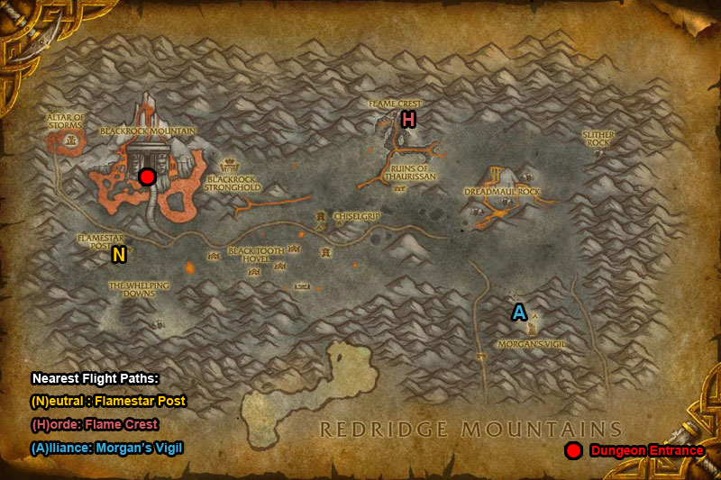
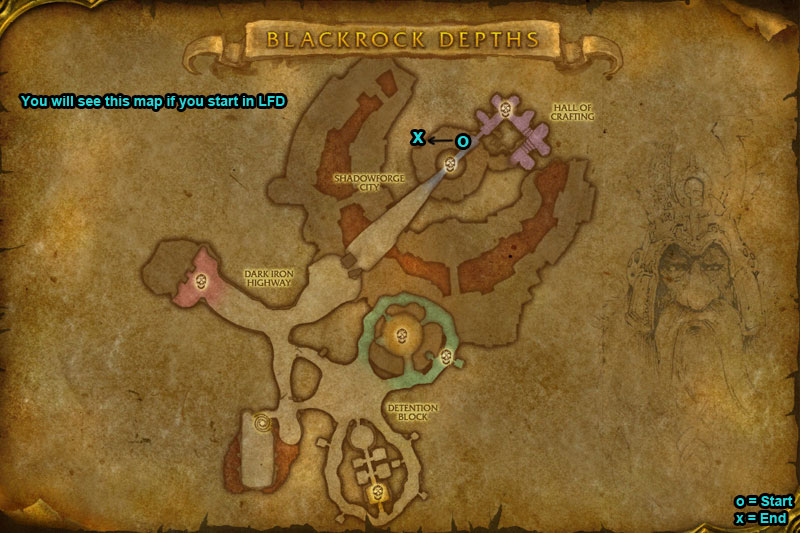
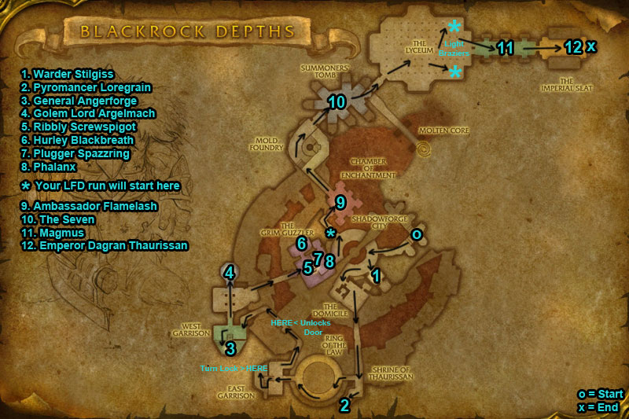
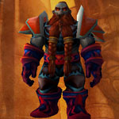
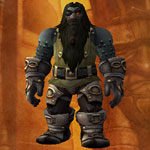
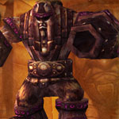
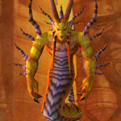
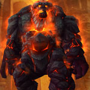

You can find the Blackrock Depths dungeon entrance within Blackrock Mountain, Eastern Kingdoms.
The coordinates are (20.8,38.6)


You can enter Blackrock Mountain from two entrances, find them in Burning Steppes or Searing Gorge (Eastern Kingdoms).

Make your way over to the Blackrock Depths summoning stone (located in the middle), you can reach hear by flying over or climbing down the chain.

Head down long chain & you should see an npc Lothos Riftwaker, run past him &inside take left side, run all the way through & at the back you will come across the entrance.
Route:
To unlock the door to bosses 11 & 12 light the two Shadowforge Braziers. Kill two Shadowforge Flame Keepers to get a Shadowforge Torch.
Archive note: the LFD route map uploaded to this page in Feb 2024 was never captured by the Wayback Machine. See the Full Map tab for the older 2014 route maps.
To unlock the door to bosses 11 & 12 light the two Shadowforge Braziers. Kill two Shadowforge Flame Keepers to get a Shadowforge Torch.
Archive note: the full route map uploaded to this page in Feb 2024 was never captured by the Wayback Machine.
Original 2014 route maps (from the 2018 version of this page):


Bosses:
/i Kill the dog first. Uses frost spells. Interrupt ‘Frostbolt’.
/i Kill fire totem. Flame Shock inflicts fire damage to a player. Interrupt Molten Blast.

Quick Boss Tactics:/i Sunder Armor increases physical damage taken. Uses Enrage. At 40% health summons mobs to fight (interrupt Medics healing spells).
/i Uses Chain Lightning. Players are hit with nature damage.
/i (he is friendly, speak with him to start fight). Deals physical damage. Hamstring damages & slows movement speed. At 30% health boss runs away from players.

Quick Boss Tactics:/i (smash the 3 Thunderbrew Lager Kegs in the empty left room to summon boss). Avoid frontal fire cone Flame Breath. Drunken Rage increases his attack speed & physical damage by 50%.
/i (Eat x3 food & drink on the table to turn him unfriendly). Hits players with shadow & fire damage. (Killing him unlocks the Bar Door & room becomes unfriendly.)

Quick Boss Tactics:/i Turns unfriendly when you kill Plugger Spazzring. Mighty Blow damages & knocks back player. Thunderclap damages all nearby & slows speed. Fireball Volley inflicts fire damage to all nearby players.

Quick Boss Tactics:/i Burning Spirit sacrifice themselves when near boss to increase his damage & size, this stacks. Inflicts fire damage to players hit by his melee.
/i Speak with Doom’rel to start. Kill all 6 ghosts & boss will join fight. Summons Voidwalkers. Interrupt Banish & Shadow Bolt Volley. Immolate inflicts fire damage to a player.

Quick Boss Tactics:/i Careful of statues flames. War Stomp inflicts physical damage to all nearby & knocks back (if you are hit with this you will be stunned). Fiery Burst inflicts fire damage to players in selected areas.
/i Hand of Thaurissan inflicts fire damage to a player & stuns them. Interrupt High Priestess of Thaurissan (you can interrupt all her spells).